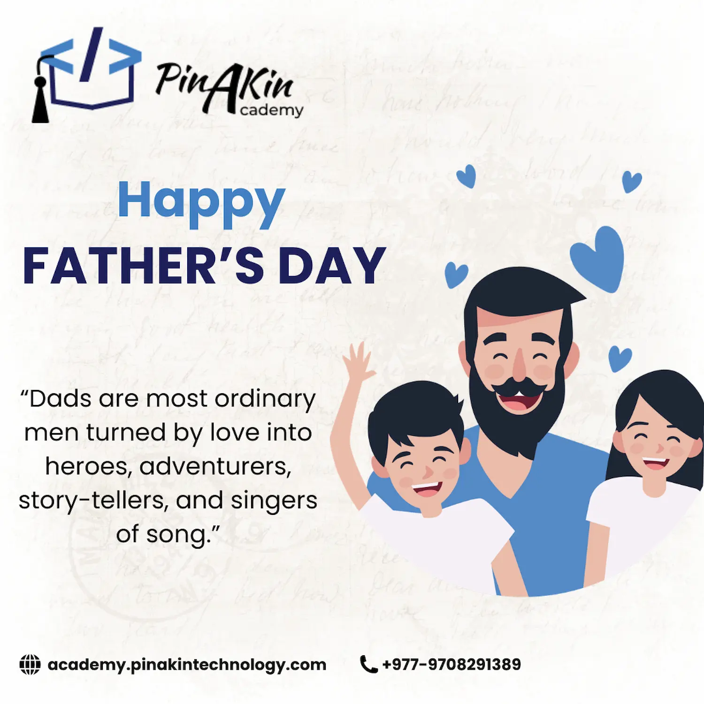
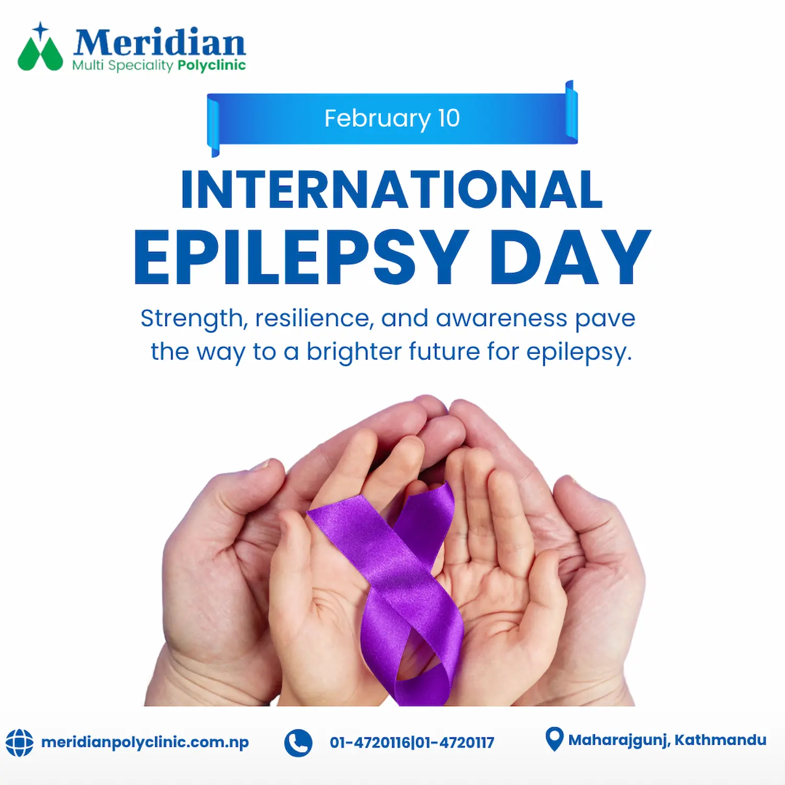
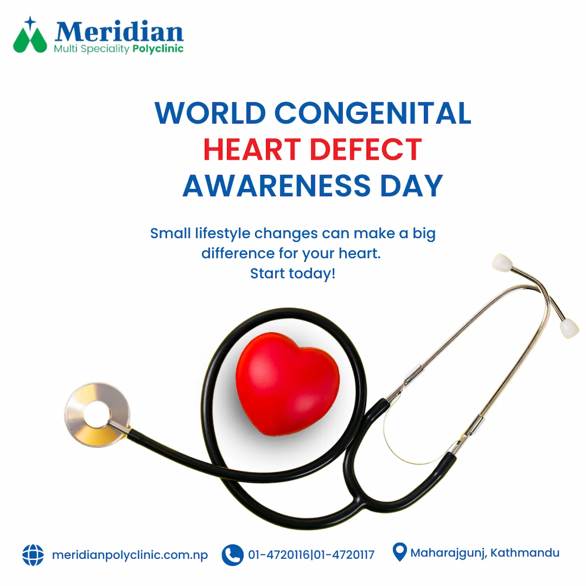

Overview
Created Facebook banner designs that combined impactful visuals and effective layouts to support marketing campaigns and enhance brand visibility.
Featured Work
A premium campaign series designed to improve brand visibility and audience engagement across Facebook.
Created Facebook banner designs that combined impactful visuals and effective layouts to support marketing campaigns and enhance brand visibility.


